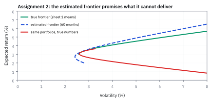
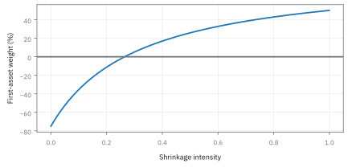
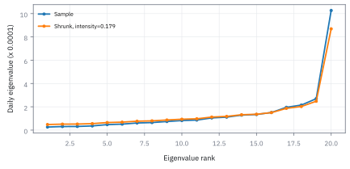

17.8 Covariance Shrinkage (Ledoit-Wolf)
ค่าเฉลี่ยและ covariance ที่ประมาณจากข้อมูลมีความคลาดปนอยู่ และโปรแกรมจัดพอร์ตชอบทุ่มเงินไปที่ความคลาดนั้นพอดี shrinkage แก้โดยดึงค่าประมาณเข้าหาค่าที่เรียบง่าย ยอมให้คำตอบเบี้ยวไปนิดหนึ่ง แลกกับคำตอบที่แกว่งน้อยลงมาก
ทีมจัดพอร์ตมีเงินก้อนหนึ่งจะแบ่งลงสินทรัพย์สามตัว (สินทรัพย์คือของที่ซื้อเก็บไว้เพื่อหวังผลตอบแทน เช่น หุ้นหรือพันธบัตร) ทีมมีประวัติผลตอบแทนรายเดือนย้อนหลัง 60 เดือน คือ 5 ปี และใช้โปรแกรมที่เรียกว่า optimizer ช่วยตัดสินใจ optimizer รับค่าเฉลี่ยของผลตอบแทนกับ covariance (ตัวเลขที่บอกว่าแต่ละตัวแกว่งแรงแค่ไหน และแกว่งไปด้วยกันแค่ไหน) ที่ประมาณจากข้อมูล แล้วคืนสัดส่วนเงินที่ให้ Sharpe ratio สูงที่สุด
Sharpe ratio คือผลตอบแทนที่ได้เกินเงินฝากที่ไม่มีความเสี่ยง หารด้วยความผันผวนของพอร์ต (ความผันผวนคือขนาดการแกว่งของผลตอบแทน วัดเป็น standard deviation) ยิ่งสูงยิ่งได้ผลตอบแทนมากต่อความเสี่ยงหนึ่งหน่วย optimizer รายงานว่าพอร์ตที่มันเลือกได้ Sharpe 0.864 (หน้านี้จะคำนวณตัวเลขนี้ให้ดูในขั้นที่ 3)
ในชีวิตจริงเราไม่มีทางรู้ว่าตัวเลขนี้จริงแค่ไหน แต่ข้อมูลชุดนี้สร้างจากโลกสมมติ เราจึงรู้ค่าจริงที่อยู่เบื้องหลังข้อมูล:
- ค่าเฉลี่ยผลตอบแทนจริงต่อปี $\mu=(6\%,\ 2\%,\ 4\%)$
- covariance จริงต่อปี $V$ (เขียนไว้เต็มในขั้นที่ 3)
- เงินฝากที่ไม่มีความเสี่ยงให้ $r_f=1\%$ ต่อปี
ถ้าวัดพอร์ตเดิมด้วยค่าจริงชุดนี้ มันได้ Sharpe เท่าไร และเราทำอะไรได้บ้างให้ดีขึ้น?
ลองตอบก่อนเปิดเฉลย
ได้แค่ 0.586 ส่วนพอร์ตที่ดีที่สุดเมื่อรู้ค่าจริงได้ 0.851 คิดเป็น $0.586/0.851\approx69\%$ ของที่ทำได้ สาเหตุคือ optimizer ใส่เงิน 78% ในสินทรัพย์ตัวที่สอง เพราะข้อมูล 60 เดือนบอกว่าค่าเฉลี่ยของมันคือ 4.71% ต่อปี ทั้งที่ค่าจริงคือ 2%
ทางแก้ที่ได้ผลที่สุดในโจทย์นี้ฟังดูแปลก คือตั้งค่าเฉลี่ยที่ประมาณของทั้งสามตัวให้เท่ากันก่อน แล้วให้ optimizer เลือกจาก covariance อย่างเดียว Sharpe ที่วัดด้วยค่าจริงขึ้นเป็น 0.834 การไม่เชื่อค่าเฉลี่ยที่ประมาณเลยจึงได้ผลดีกว่าเชื่อมันเต็มที่
ภาพรวมก่อนลงสูตร
optimizer ในหน้านี้คือสูตรของ Markowitz สูตรบอกว่าสัดส่วนเงิน $w$ ในแต่ละสินทรัพย์ แปรตามค่านี้
ในสูตรนี้ $\mu$ คือ vector ค่าเฉลี่ยผลตอบแทนของแต่ละสินทรัพย์ $\Sigma$ คือ covariance matrix ซึ่งบอกว่าแต่ละตัวแกว่งแรงแค่ไหนและแกว่งไปด้วยกันแค่ไหน $r_f$ คือผลตอบแทนเงินฝากที่ไม่มีความเสี่ยง และ $\mathbf 1$ คือ vector ที่ทุกช่องเป็น 1 ปัญหาคือเราไม่รู้ $\mu$ กับ $\Sigma$ จริง เรามีแค่ค่าที่ประมาณจากข้อมูล และค่าประมาณนี้พาปัญหามาสองชั้น
- ชั้นแรก ค่าเฉลี่ยประมาณได้หยาบมาก ข้อมูล 5 ปีบอกค่าเฉลี่ยต่อปีคลาดได้ราว 2 ถึง 4 จุดเปอร์เซ็นต์ (ขั้นที่ 2 จะคำนวณตัวเลขนี้ให้ดู)
- ชั้นที่สอง inverse ขยายความคลาด $\Sigma^{-1}$ หารด้วย eigenvalue ของ $\Sigma$ ทิศที่ eigenvalue เล็กจึงถูกขยายมาก แต่ eigenvalue เล็กคือตัวที่ประมาณพลาดง่ายที่สุด
ผลรวมของสองชั้นนี้คือ optimizer ทุ่มเงินไปที่ความคลาดพอดี Richard Michaud จึงเรียกมันว่า error maximizer คือเครื่องขยายความคลาด
ทางแก้ชื่อ shrinkage คือผสมค่าที่ประมาณได้กับเป้าหมายที่เรียบง่าย ด้วยความเข้ม $\delta$ ระหว่าง 0 ถึง 1 ($\delta=0$ คือไม่ผสมเลย $\delta=1$ คือใช้เป้าหมายล้วน) รูปด้านล่างเล่าทั้งเรื่องในภาพเดียว ข้อมูลในรูปเป็นข้อมูลจำลองของสินทรัพย์ 100 ตัว ที่ไม่เกี่ยวข้องกันเลยและแกว่งแรงเท่ากัน เก็บไว้ 250 วัน ความจริงคือ eigenvalue ทุกตัวเท่ากับ 1 แต่ sample covariance (covariance ที่คำนวณตรง ๆ จากข้อมูล) ให้ eigenvalue กระจายตั้งแต่ 0.16 ถึง 2.63 การกระจายนี้เป็นของปลอมที่เกิดเพราะข้อมูลไม่พอ ถ้าผสมครึ่งหนึ่ง ทุกตัวถูกดึงเข้าหา 1 ได้ครึ่งทาง ส่วนสูตรของ Ledoit–Wolf ซึ่งเลือกความเข้มจากข้อมูลเอง ดึงไปเกือบสุดทาง
หน้านี้เดินตามลำดับนี้
- ดูว่าทำไม optimizer ขยายความคลาด ด้วยตัวอย่างสองสินทรัพย์
- วัดว่าค่าเฉลี่ยคลาดได้แค่ไหน แล้วดูผลกับข้อมูล 60 เดือน
- ผสมค่าเฉลี่ยก่อน เพราะเป็นตัวที่คลาดมากที่สุด
- ผสม covariance แล้วดูว่ามันทำอะไรกับ eigenvalue และสัดส่วนเงิน
- คิดความเข้มของ Ledoit–Wolf ด้วยมือ และดูว่าเสียงรบกวนล้วนสร้าง eigenvalue ปลอมได้แค่ไหน
- จบที่วิธีตรวจว่าการผสมช่วยจริง หรือทำให้แย่ลง
รูป — eigenvalue ที่กระจายเพราะเสียงรบกวน ถูกดึงกลับหาเป้าหมาย
ศัพท์ที่ใช้ในหัวข้อนี้
- Sharpe ratio
- ผลตอบแทนคาดหวังของพอร์ตลบผลตอบแทนเงินฝากที่ไม่มีความเสี่ยง แล้วหารด้วยความผันผวนของพอร์ต $\mathrm{SR}=(\mu_p-r_f)/\sigma_p$ บอกว่าได้ผลตอบแทนส่วนเกินเท่าไรต่อความเสี่ยงหนึ่งหน่วย
- พอร์ต tangency
- พอร์ตที่ให้ Sharpe ratio สูงที่สุด สัดส่วนเงินแปรตาม $\Sigma^{-1}(\mu-r_f\mathbf 1)$ แล้วปรับให้รวมเป็น 1
- พอร์ตเสี่ยงต่ำสุด (minimum variance)
- พอร์ตที่ความผันผวนต่ำที่สุด โดยไม่สนค่าเฉลี่ยเลย ใช้แค่ covariance จึงเหมาะสำหรับทดสอบว่า covariance ที่ประมาณดีแค่ไหน
- Short
- ยืมสินทรัพย์มาขายก่อน แล้วซื้อคืนทีหลัง ได้กำไรเมื่อราคาลง ในสูตรคือสัดส่วนเงินที่ติดลบ
- Estimation error
- ความคลาดของค่าประมาณ คือค่าที่ประมาณจากข้อมูลลบค่าจริงที่อยากรู้ หน้านี้ใช้โลกสมมติที่รู้ค่าจริง จึงวัดได้ตรง ๆ ว่าความคลาดทำร้ายพอร์ตแค่ไหน
- Error maximizer
- ชื่อที่ Richard Michaud ตั้งให้ optimizer แบบ mean-variance เพราะมันเทเงินไปที่ตัวที่ค่าเฉลี่ยถูกประมาณสูงเกินจริง และตัวที่ความเสี่ยงถูกประมาณต่ำเกินจริง
- Shrinkage
- การผสมค่าที่ประมาณได้กับเป้าหมาย ด้วยความเข้ม $\delta$ ผลคือค่าประมาณแกว่งน้อยลง แต่ถ้าเป้าหมายไม่ตรงกับความจริง ค่าประมาณจะเบี้ยวไปทางเป้าหมาย
- Target (เป้าหมาย)
- matrix ที่เราดึงค่าประมาณเข้าหา หน้านี้ใช้ $mI$ ซึ่งบอกว่าทุกตัวมี variance เท่ากันที่ $m$ และไม่มีคู่ไหนแกว่งไปด้วยกันเลย งานอื่นอาจใช้ correlation เท่ากันทุกคู่ หรือ covariance จากแบบจำลองปัจจัย จึงต้องบอกเสมอว่าใช้เป้าหมายตัวไหน
- Ledoit–Wolf
- สูตรที่เลือกความเข้ม $\delta$ จากข้อมูลเอง โดยเทียบสองขนาด คือ sample covariance สั่นแค่ไหน กับมันห่างจากเป้าหมายแค่ไหน
- Condition number
- eigenvalue ที่ใหญ่ที่สุดหารด้วย eigenvalue ที่เล็กที่สุดของ matrix ที่ eigenvalue เป็นบวกทุกตัว บอกว่าการหา inverse ของ matrix ขยายความคลาดได้ราวกี่เท่า
- Marchenko–Pastur
- ผลทางทฤษฎีที่บอกว่า ถ้าข้อมูลเป็นเสียงรบกวนล้วน eigenvalue ของ sample covariance จะกระจายอยู่ในช่วงที่คำนวณได้จากจำนวนสินทรัพย์หารด้วยจำนวนวัน eigenvalue ที่หลุดช่วงนี้จึงน่าจะมีความหมายจริง
สัญลักษณ์และหน่วย
| สัญลักษณ์ | ความหมาย | หน่วย |
|---|---|---|
| $w$ | สัดส่วนเงินในแต่ละสินทรัพย์ รวมกันเป็น 1 ค่าติดลบคือ short | สัดส่วน |
| $r_f$ | ผลตอบแทนเงินฝากที่ไม่มีความเสี่ยง | ต่อปี |
| $\mu,\ V$ | ค่าเฉลี่ยและ covariance จริงของโลกสมมติ | ต่อปี |
| $\hat\mu,\ \hat V$ | ค่าเฉลี่ยและ covariance ที่ประมาณจาก 60 เดือน | ต่อปี |
| $\Sigma$ | covariance matrix ทั่วไป (ใช้เมื่อพูดถึงสูตร ไม่เจาะจงว่าเป็นค่าจริงหรือค่าประมาณ) | ผลตอบแทนกำลังสอง |
| $\mathrm{SR}$ | Sharpe ratio $(\mu_p-r_f)/\sigma_p$ | ไม่มีหน่วย |
| $\alpha$ | น้ำหนักที่ให้ค่าเฉลี่ยที่ประมาณของแต่ละตัว เมื่อดึงเข้าหาค่าเฉลี่ยรวมของทุกตัว | สัดส่วน |
| $S,\ m$ | sample covariance และค่าเฉลี่ยของ variance บนแนวทแยงของมัน | ผลตอบแทนกำลังสอง |
| $\delta$ | ความเข้มของการผสมกับ $mI$ (0 คือไม่ดึง 1 คือใช้เป้าหมายล้วน) | สัดส่วน |
| $\widehat\Sigma_\delta$ | covariance หลังผสม $(1-\delta)S+\delta mI$ | ผลตอบแทนกำลังสอง |
| $\lambda_i,\ q_i,\ \kappa$ | eigenvalue, eigenvector และ condition number | ผลตอบแทนกำลังสอง, ไม่มีหน่วย, เท่า |
| $x_t$ | vector ผลตอบแทนวันที่ $t$ (ในตัวอย่างที่สมมติว่ารู้ว่าค่าเฉลี่ยเป็นศูนย์) | % |
| $n,\ p,\ \gamma$ | จำนวนวัน จำนวนสินทรัพย์ และอัตราส่วน $p/n$ | วัน, สินทรัพย์, ไม่มีหน่วย |
| $d^2,\ \bar b^2$ | ระยะกำลังสองจาก $S$ ถึงเป้าหมาย และขนาดที่ $S$ สั่นเพราะข้อมูลมีจำกัด | ผลตอบแทนกำลังสี่ |
ขั้นที่ 1 — สองสินทรัพย์ที่เหมือนกันทุกอย่าง แต่ค่าประมาณไม่เหมือน
ก่อนดูข้อมูลจริง ลองตัวอย่างที่เล็กที่สุดที่ยังเห็นปัญหาได้ (ตัวเลขทั้งหมดในขั้นนี้สมมติขึ้น)
- สินทรัพย์สองตัว ค่าเฉลี่ยผลตอบแทนจริงเท่ากัน $\mu=(5\%,\ 5\%)$ ต่อปี
- ความผันผวนเท่ากันที่ 20% ต่อปี และสองตัวไม่สัมพันธ์กันเลย covariance matrix จึงเป็น $\Sigma=0.20^2I=0.04I$
- เงินฝากที่ไม่มีความเสี่ยงให้ $r_f=1\%$ ต่อปี
- ค่าเฉลี่ยที่ประมาณได้คือ $\hat\mu=(6\%,\ 4\%)$ ตัวแรกสูงไป 1 จุดเปอร์เซ็นต์ ตัวที่สองต่ำไป 1 จุด
ความคลาดเฉลี่ยของสองตัวคือ $(+1-1)/2=0$ ฟังดูเหมือนค่าประมาณที่ดี ลองดูว่า optimizer ทำอะไรกับมัน เมื่อ $\Sigma=0.04I$ ตัว $\Sigma^{-1}=25I$ แค่คูณทุกช่องเท่ากัน สัดส่วนเงินของพอร์ต tangency จึงแปรตามผลตอบแทนส่วนเกิน $\hat\mu-r_f\mathbf1$ ตรง ๆ
ความผันผวนของพอร์ตคิดแบบนี้ได้เพราะสองตัวไม่สัมพันธ์กัน variance ของพอร์ตจึงเป็นแค่ $w_1^2(0.04)+w_2^2(0.04)$ แล้วถอดรากได้ $0.20\sqrt{w_1^2+w_2^2}$ ส่วน Sharpe สามตัวต่างกันแค่ว่าใช้ผลตอบแทนตัวไหนวัด $\mathrm{SR}_{\text{est}}$ ใช้ค่าที่ประมาณ คือสิ่งที่พอร์ต “สัญญา” $\mathrm{SR}_{\text{true}}$ ใช้ค่าจริง คือสิ่งที่ได้จริง เพราะไม่ว่าแบ่งเงินอย่างไร ค่าเฉลี่ยจริงของพอร์ตก็เป็น 5% และ $\mathrm{SR}_{\text{best}}$ คือพอร์ตแบ่งครึ่ง ซึ่งเป็นคำตอบที่ถูกเมื่อสองตัวเหมือนกันทุกอย่าง ความผันผวนของมันคือ $0.20\sqrt{0.5^2+0.5^2}=0.20/\sqrt2$
ผลคือพอร์ตนี้สัญญา Sharpe 0.2915 แต่ให้จริง 0.2744 ต่ำกว่าการแบ่งครึ่ง (0.2828) ซึ่งไม่ต้องรู้อะไรเลย ทำไมเป็นแบบนั้น ทั้งที่ความคลาดเฉลี่ยเป็นศูนย์? เพราะ optimizer ใส่เงินมากในตัวที่ดูดีเกินจริง และใส่เงินน้อยในตัวที่ดูแย่เกินจริง ความคลาดจึงไม่หักล้างกันในพอร์ต แต่ถูกเลือกเข้าพอร์ตอย่างเป็นระบบ ถ้ายอมให้ short ได้ (ยืมสินทรัพย์มาขาย สัดส่วนเงินติดลบ) optimizer ยิ่งไล่ความคลาดได้ไกลขึ้นอีก
ขั้นที่ 2 — ค่าเฉลี่ยประมาณยากกว่า covariance มาก
ขั้นที่แล้วเห็นว่าความคลาดแค่ 1 จุดเปอร์เซ็นต์ก็ทำให้พอร์ตแย่ลงได้ คำถามต่อมาคือ ข้อมูล 60 เดือนทำให้ค่าเฉลี่ยคลาดได้แค่ไหน เครื่องมือที่ใช้วัดคือ standard error (SE) ถ้าเก็บข้อมูลใหม่ได้หลายชุด ค่าเฉลี่ยที่คำนวณได้จะแกว่งไปมาจากชุดหนึ่งไปอีกชุด SE คือ standard deviation ของการแกว่งนั้น ค่าเฉลี่ยของ $n$ ตัวที่เป็นอิสระกันมี SE เท่ากับความผันผวนของแต่ละตัวหารด้วย $\sqrt n$ ของที่ต้องใช้มีสามอย่าง
- ค่าเฉลี่ยรายปีคือ 12 เท่าของค่าเฉลี่ยรายเดือน $\hat\mu_{\text{ann}}=12\,\hat\mu_{\text{mon}}$
- ความผันผวนรายเดือนคือ $\sigma_{\text{mon}}=\sigma_{\text{ann}}/\sqrt{12}$ ซึ่งถูกเมื่อผลตอบแทนแต่ละเดือนเป็นอิสระกัน เพราะ variance ของ 12 เดือนบวกกันได้เป็น $12\sigma_{\text{mon}}^2=\sigma_{\text{ann}}^2$
- variance จริงต่อปีของสามสินทรัพย์ในโลกสมมติ อ่านจากแนวทแยงของ $V$ (เขียนไว้เต็มในขั้นที่ 3) ได้ 0.008, 0.002 และ 0.008
ข้อมูลห้าปีให้ค่าเฉลี่ยที่คลาดได้ราว 4, 2 และ 4 จุดเปอร์เซ็นต์ต่อปี เทียบกับค่าจริง 6%, 2% และ 4% ความคลาดใหญ่พอ ๆ กับตัวค่าเอง จึงสลับลำดับได้ง่ายว่าตัวไหนน่าลงทุนที่สุด
จุดที่น่าแปลกคือ SE ขึ้นกับจำนวนปี ไม่ใช่จำนวนจุดข้อมูล ลองเปลี่ยนเป็นข้อมูลรายวันห้าปี ซึ่งมี $252\times5=1{,}260$ วัน (ปีหนึ่งมีวันทำการราว 252 วัน) ค่าเฉลี่ยรายปีคือ 252 เท่าของค่าเฉลี่ยรายวัน และ $\sigma_{\text{day}}=\sigma_{\text{ann}}/\sqrt{252}$ จะได้ $\mathrm{SE}=252\,\sigma_{\text{day}}/\sqrt{1{,}260}=\sigma_{\text{ann}}\sqrt{252/1{,}260}=\sigma_{\text{ann}}/\sqrt5$ เท่าเดิมทุกตัว เหตุผลคือค่าเฉลี่ยวัดจากว่าราคาไปถึงไหนเมื่อเวลาผ่านไป ซึ่งขึ้นกับช่วงเวลาทั้งหมด ไม่ใช่ว่าแบ่งช่วงนั้นถี่แค่ไหน แต่ covariance วัดจากขนาดการแกว่งในแต่ละช่วง ทุกวันที่เพิ่มขึ้นให้ตัวอย่างการแกว่งใหม่อีกหนึ่งตัว ข้อมูลรายวันจึงช่วย covariance ได้มาก นี่คือเหตุที่ covariance ประมาณได้ดีกว่าค่าเฉลี่ยมาก
แต่ covariance ก็มีปัญหาของมันเมื่อสินทรัพย์มีจำนวนมาก covariance matrix ขนาด $d\times d$ มี variance $d$ ค่า และ covariance ของแต่ละคู่อีก $d(d-1)/2$ ค่า รวมเป็นค่าที่ไม่ซ้ำกัน $d(d+1)/2$ ค่า สามสินทรัพย์มีแค่ $3\times4/2=6$ ค่า แต่หุ้น 500 ตัวมี $500\times501/2=125{,}250$ ค่า
ถ้ามีข้อมูลหุ้น 500 ตัวแค่ 250 วัน sample covariance จะกลับ matrix ไม่ได้เลย เหตุผลเป็นแบบนี้ ให้ $x_t$ คือ vector ผลตอบแทนของหุ้นทั้ง 500 ตัวในวันที่ $t$ แต่ละวันให้ matrix $x_tx_t^{\mathsf T}$ ที่มี rank เท่ากับ 1 ผลรวมของ 250 ตัวจึงมี rank ไม่เกิน 250 และการหักค่าเฉลี่ยออกทำให้ลดลงอีกหนึ่ง เหลือไม่เกิน 249 matrix ขนาด $500\times500$ ที่ rank ไม่เกิน 249 จึงมี eigenvalue เป็นศูนย์อย่างน้อย $500-249=251$ ตัว
ขั้นที่ 3 — ข้อมูล 60 เดือน: พอร์ตจากค่าที่ประมาณ วัดด้วยค่าจริงของโลกสมมติ
ตอนนี้กลับมาที่โจทย์ในตอนต้น ทีมมีข้อมูลผลตอบแทนรายเดือน 60 เดือนของสามสินทรัพย์ ชุดเดียวกับที่ใช้ตรวจ VaR ในหน้า VaR backtesting เราจะทำตามที่ทีมทำจริง คือหาพอร์ต tangency จากค่าที่ประมาณ แล้วแอบดูค่าจริงของโลกสมมติเพื่อวัดว่าพอร์ตนั้นดีจริงแค่ไหน
โจทย์ให้อะไรมาบ้าง:
- ค่าเฉลี่ยต่อปีที่ประมาณได้ $\hat\mu$ คือค่าเฉลี่ยรายเดือนของ 60 เดือนคูณ 12 ได้ $(-0.52\%,\ 4.71\%,\ -0.70\%)$
- covariance ต่อปีที่ประมาณได้ $\hat V$ อยู่ในกล่องสูตรด้านล่าง
- ค่าจริงของโลกสมมติ $\mu=(6\%,\ 2\%,\ 4\%)$ ต่อปี และ $V=10^{-4}\begin{bmatrix}80&-20&40\\-20&20&-20\\40&-20&80\end{bmatrix}$
- เงินฝากที่ไม่มีความเสี่ยง $r_f=1\%$ ต่อปี
ขั้นตอนมีสามอย่าง หาสัดส่วนเงิน $\hat w$ จากค่าที่ประมาณ คิด Sharpe ด้วยค่าที่ประมาณ (สิ่งที่พอร์ตสัญญา) แล้วคิด Sharpe ด้วยค่าจริง (สิ่งที่ได้จริง) สุดท้ายเทียบกับพอร์ตที่ดีที่สุดเมื่อรู้ค่าจริง ซึ่งคือพอร์ต tangency ที่คำนวณจาก $\mu$ กับ $V$ ได้ $w^*=(0.2917,\ 0.5833,\ 0.125)$
คำตอบ: covariance ที่ประมาณใกล้ของจริงพอควร เช่น variance ของตัวแรก 0.0056 เทียบกับค่าจริง 0.008 และ covariance ของตัวแรกกับตัวที่สอง −0.0020 เทียบกับ −0.002 แต่ค่าเฉลี่ยที่ประมาณกลับเครื่องหมายไปสองตัว ตัวแรกจริง ๆ ให้ 6% แต่ข้อมูลบอก −0.52% ส่วนตัวที่สองจริง ๆ ให้แค่ 2% แต่ข้อมูลบอก 4.71% ซึ่งดีที่สุดในสามตัว optimizer จึงเทเงิน 78% ไปที่ตัวที่สอง
พอวัดด้วยค่าจริง พอร์ตนี้ให้ผลตอบแทน 2.688% ต่อปี ความผันผวน 2.882% ต่อปี และ Sharpe 0.586 ได้แค่ 68.8% ของ 0.851 ที่ทำได้ดีที่สุด สัดส่วน $\mathrm{SR}_{\text{true}}/\mathrm{SR}_{\text{best}}$ นี้เรียกว่า Sharpe ratio efficiency มันไม่มีวันเกิน 1 เพราะพอร์ตที่ดีที่สุดถูกเลือกมาให้ Sharpe สูงสุดเมื่อวัดด้วยค่าจริงอยู่แล้ว พอร์ตอื่นจึงสูงกว่าไม่ได้
ความคลาดขนาดนี้ผิดปกติไหม? ค่าประมาณของตัวแรกห่างจากค่าจริง $(-0.52-6)/4.0\approx-1.63$ เท่าของ SE จากขั้นที่ 2 ความห่างอย่างน้อยเท่านี้เกิดจากการสุ่มได้ราว 1 ครั้งใน 10 ($P(|Z|\gt1.63)\approx0.10$ เมื่อ $Z$ เป็น standard Normal) จึงไม่ใช่เรื่องแปลก ข้อมูลไม่ได้ “เสีย” ข้อมูลแค่ไม่พอ
ตรวจเองใน 10 วินาที: $0.1267+0.7826+0.0907=1$ และ $(2.688-1)/2.882\approx0.586$
รูป — frontier ที่ประมาณสัญญาสิ่งที่ให้ไม่ได้

ขั้นที่ 4 — ดึงค่าเฉลี่ยเข้าหาค่าเฉลี่ยรวม
ขั้นที่ 2 บอกว่าค่าเฉลี่ยคือตัวที่คลาดมากที่สุด จึงแก้ที่ค่าเฉลี่ยก่อน วิธีที่ใช้มาจากความคิดของ James กับ Stein คือไม่เชื่อค่าเฉลี่ยของแต่ละตัวเต็มที่ แต่ผสมมันกับค่าเฉลี่ยรวมของทั้งสามตัว $\bar{\hat\mu}$ ด้วยน้ำหนัก $\alpha$ ถ้า $\alpha=1$ คือเชื่อค่าประมาณเต็มที่ ถ้า $\alpha=0$ คือให้ทุกตัวมีค่าเฉลี่ยเท่ากันหมด จากนั้นหาพอร์ต tangency ใหม่ด้วย $\hat V$ เดิม แล้ววัดด้วยค่าจริงเหมือนขั้นที่ 3
ค่า $\mathrm{SR}_{\text{true}}$ แต่ละแถวได้จากการทำซ้ำขั้นที่ 3 ด้วยค่าเฉลี่ยชุดใหม่ (โค้ดท้ายหน้าคำนวณให้) การดึงครึ่งทางลดค่าเฉลี่ยของตัวที่สองจาก 4.71% เหลือ 2.94% ใกล้ค่าจริง 2% ขึ้น แต่ Sharpe ที่ได้จริงขยับจาก 0.586 เป็นแค่ 0.615 ดึงครึ่งทางจึงช่วยได้นิดเดียว แต่ดึงจนเท่ากันหมดได้ 0.834 เกือบถึง 0.851 ที่ดีที่สุด
ทำไมดึงจนเท่ากันหมดจึงดีขนาดนี้? เพราะเมื่อค่าเฉลี่ยทุกตัวเท่ากัน optimizer ไม่มีความคลาดของค่าเฉลี่ยให้ไล่ตาม มันจึงเลือกจาก covariance อย่างเดียว และ covariance ประมาณได้ดีกว่ามาก สัดส่วนเงิน $(0.227,\ 0.622,\ 0.150)$ จึงใกล้พอร์ตที่ดีที่สุดจริง $(0.292,\ 0.583,\ 0.125)$ ในโลกสมมตินี้ การทิ้งข้อมูลค่าเฉลี่ยไปเลยจึงชนะการเชื่อมัน
แต่ทำไมการดึงเข้าหาจุดร่วมจึงช่วย ทั้งที่จุดร่วม 1.163% ไม่ใช่ค่าจริงของตัวไหนเลย? Charles Stein พิสูจน์ว่า เมื่อประมาณค่าเฉลี่ยของข้อมูล Normal ตั้งแต่สามตัวขึ้นไปพร้อมกัน การดึงทุกตัวเข้าหาจุดร่วมด้วยความแรงที่คำนวณจากข้อมูล ให้ผลรวมของความคลาดกำลังสองต่ำกว่าการใช้ค่าเฉลี่ยของแต่ละตัวตรง ๆ ไม่ว่าค่าจริงจะเป็นเท่าไร (ถ้าจุดร่วมเป็นค่าเฉลี่ยรวมที่คำนวณจากข้อมูลเอง ต้องมีตั้งแต่สี่ตัว ตัวอย่างนี้มีสามตัว ผลที่เห็นจึงเป็นผลของข้อมูลชุดนี้ ไม่ใช่ทฤษฎีรับประกัน) เหตุผลแบบหยาบ ๆ คือ ค่าที่ดูสูงหรือต่ำผิดปกติ มักผิดปกติส่วนหนึ่งเพราะเสียงรบกวน การดึงกลับจึงลบเสียงรบกวนได้มากกว่าลบข้อมูลจริง ขั้นต่อไปจะใช้ความคิดเดียวกันนี้กับ covariance
ขั้นที่ 5 — ทำไม inverse ขยายความคลาด: สองสินทรัพย์ที่เกือบเป็นตัวเดียวกัน
ค่าเฉลี่ยเป็นแค่ครึ่งหนึ่งของปัญหา อีกครึ่งอยู่ที่ $\Sigma^{-1}$ ในสูตรของ optimizer ขั้นนี้จะดูว่าทำไมการหา inverse จึงขยายความคลาด เครื่องมือคือ eigenvalue covariance matrix $S$ เขียนได้เป็นผลรวมของทิศ $q_i$ (eigenvector แต่ละทิศคือพอร์ตแบบหนึ่ง) ที่มีขนาด $\lambda_i$ (eigenvalue คือ variance ของพอร์ตในทิศนั้น) inverse ใช้ทิศเดิม แต่ขนาดกลับเป็น $1/\lambda_i$
ตัวอย่างที่ใช้ต่อไปอีกหลายขั้นคือสินทรัพย์สองตัว (ตัวเลขสมมติ ต่อปี)
- ตัวแรกความผันผวน 20% จึงมี variance $0.20^2=0.04$
- ตัวที่สองความผันผวน 10% จึงมี variance $0.10^2=0.01$
- covariance ของสองตัว 0.019 คิดเป็น correlation $0.019/(0.20\times0.10)=0.95$ คือสองตัวขึ้นลงเกือบพร้อมกันตลอด
eigenvalue ของ matrix $2\times2$ คือรากของ $\lambda^2-(\operatorname{tr}S)\lambda+\det S=0$ โดย trace คือผลบวกแนวทแยง และ determinant คือ $s_{11}s_{22}-s_{12}^2$ ส่วนพอร์ตเสี่ยงต่ำสุดหาได้จากการตั้งอนุพันธ์ของ variance ของพอร์ตเทียบ $w_1$ ให้เป็นศูนย์ โดย $w_2=1-w_1$ แบบในหน้า Markowitz portfolio theory
สอง eigenvalue ต่างกัน 62 เท่า ทิศใหญ่คือ “ถือทั้งคู่” ซึ่งแกว่งมาก ทิศเล็กคือ “ถือตัวหนึ่ง short อีกตัว” สองตัวขึ้นลงพร้อมกัน ส่วนที่ถือกับส่วนที่ short จึงหักล้างกัน variance ในทิศนี้จึงเหลือแค่ 0.000793 คิดเป็นความผันผวน $\sqrt{0.000793}=2.8\%$ ต่อปี
inverse คูณทิศเล็กด้วย 1,262 แต่คูณทิศใหญ่แค่ 20 นี่คือจุดอันตราย สมมติว่าค่าจริงของ eigenvalue ตัวเล็กคือ 0.0016 ไม่ใช่ 0.000793 ตัวคูณจะเปลี่ยนจาก 1,262 เป็น $1/0.0016=625$ ความคลาดเล็ก ๆ ใน eigenvalue ตัวเล็กจึงเปลี่ยนสัดส่วนเงินได้มาก และความคลาดของค่าเฉลี่ยก็ถูกขยายด้วยตัวคูณระดับเดียวกับ condition number $\kappa$
แถวท้ายคือพอร์ตเสี่ยงต่ำสุด สูตรของมันได้จากการตั้ง $\frac{d}{dw_1}\big[w_1^2s_{11}+(1-w_1)^2s_{22}+2w_1(1-w_1)s_{12}\big]=0$ คำตอบสั่งให้ short ตัวแรก 75% และถือตัวที่สอง $1-(-0.75)=175\%$ คือเดิมพันเต็มที่กับทิศเล็กที่ดูปลอดภัยที่สุด
ขั้นที่ 6 — ผสม covariance กับ $mI$: ทิศเดิม ขนาดถูกดึงเข้าหากัน
ขั้นที่แล้วเห็นว่าปัญหาอยู่ที่ eigenvalue ตัวเล็กเกินไป สิ่งที่อยากทำคือยก eigenvalue ตัวเล็กขึ้น โดยไม่ไปยุ่งกับทิศ วิธีคือผสม $S$ กับเป้าหมาย $mI$
ในสูตรนี้ $m$ คือค่าเฉลี่ยของ variance บนแนวทแยงของ $S$ และ $I$ คือ identity matrix เป้าหมาย $mI$ บอกว่าทุกตัวแกว่งแรงเท่ากันที่ variance $m$ และไม่มีคู่ไหนแกว่งไปด้วยกัน ตัวอย่างสองสินทรัพย์มี $m=(0.04+0.01)/2=0.025$ ลองดูก่อนว่าการผสมทำอะไรกับทิศและขนาด แล้วผสมครึ่งหนึ่ง ($\delta=0.5$)
จังหวะสำคัญคือแถวแรก identity คูณ vector ใดก็ได้ตัวเดิม $Iq_i=q_i$ การบวก $\delta mI$ จึงไม่หมุนทิศไหนเลย eigenvector ของ $S$ ยังเป็น eigenvector ของ matrix ใหม่ สิ่งที่เปลี่ยนมีแค่ eigenvalue ซึ่งถูกดึงเข้าหา $m$ เป็นเส้นตรง ตัวเล็กถูกยกขึ้น $0.012896/0.000793\approx16$ เท่า ส่วนตัวใหญ่เหลือ $0.037104/0.049207\approx0.75$ เท่า คือลดลงแค่ราว 25% condition number จึงลดจาก 62.1 เหลือ 2.88 และเมื่อ $\delta\gt0$ ทุก eigenvalue มีค่าอย่างน้อย $\delta m\gt0$ matrix ที่เคยหา inverse ไม่ได้ (เช่นหุ้น 500 ตัวกับข้อมูล 250 วันในขั้นที่ 2) จึงหา inverse ได้
สัดส่วนเงินตัวแรกเปลี่ยนจาก −75% เป็น 25.81% และตัวที่สองเป็น $1-0.2581=74.19\%$ ไม่ต้อง short อีกต่อไป ลองคิดเป็นเงิน สมมติมีทุน \$10 ล้าน เดิมต้อง short ตัวแรก $0.75\times10=\$7.5$ ล้าน และถือตัวที่สอง $1.75\times10=\$17.5$ ล้าน เงินที่วางรวมสองฝั่งคือ $7.5+17.5=\$25$ ล้าน หลังผสมเหลือแค่ \$10 ล้าน ช่องนอกแนวทแยงหดครึ่งหนึ่งพอดี $0.5(0.019)+0.5(0)=0.0095$ เพราะเป้าหมายไม่มี covariance
มองสูตรเดียวกันอีกมุมได้ เขียน $(1-\delta)S+\delta mI=(1-\delta)(S+kI)$ โดย $k=\delta m/(1-\delta)=0.5(0.025)/0.5=0.025$ ตัวคูณ $(1-\delta)$ ไม่เปลี่ยนพอร์ตเสี่ยงต่ำสุด เพราะสัดส่วนเงินถูกปรับให้รวมเป็น 1 อยู่แล้ว ส่วน $S+kI$ ทำให้ variance ของพอร์ตกลายเป็น $w^{\mathsf T}Sw+k\,w^{\mathsf T}w$ พจน์ $k\,w^{\mathsf T}w$ คือค่าปรับเมื่อสัดส่วนเงินใหญ่ หรือมองว่าแต่ละสินทรัพย์มีความไม่แน่นอนเพิ่มอีก variance $k$ ที่ข้อมูลมองไม่เห็น การผสมกับ identity จึงเป็นทั้งการแก้ค่าประมาณ และการเผื่อสิ่งที่เราไม่รู้
รูป — วงรีความเสี่ยงก่อนและหลังผสม: แกนเดิม ความยาวต่างกันน้อยลง
รูป — น้ำหนักเปลี่ยนตามความเข้มของการผสม

ขั้นที่ 7 — Ledoit–Wolf: เลือกความเข้มจากข้อมูลเอง คิดด้วยมือสี่วัน
ถึงตอนนี้ยังเหลือคำถามเดียว ควรผสมแรงแค่ไหน? Ledoit กับ Wolf ให้คำตอบที่ฟังดูเป็นสามัญสำนึก ถ้า $S$ สั่นมาก (ข้อมูลน้อย ค่าประมาณไม่นิ่ง) เมื่อเทียบกับระยะที่มันห่างจากเป้าหมาย ให้ผสมแรง ถ้า $S$ นิ่งและห่างจากเป้าหมายมาก แปลว่าข้อมูลเห็นโครงสร้างจริงที่เป้าหมายไม่มี ให้ผสมเบา สองขนาดนี้วัดด้วยผลรวมกำลังสองของทุกช่องใน matrix เขียนเป็น $\|A\|^2=\sum_{i,j}a_{ij}^2$
- $d^2=\|S-mI\|^2$ คือระยะกำลังสองจาก $S$ ถึงเป้าหมาย
- $\bar b^2$ คือขนาดที่ $S$ สั่น เพราะคำนวณจากข้อมูลที่มีจำกัด
ลองคิดด้วยมือกับผลตอบแทนสมมติของสองสินทรัพย์ 4 วัน หน่วยเป็น % ได้ $x_1=(1,\ 2)$, $x_2=(-2,\ -1)$, $x_3=(3,\ 1)$ และ $x_4=(-1,\ -3)$ และสมมติว่ารู้ว่าค่าเฉลี่ยจริงเป็นศูนย์ จึงไม่ต้องหักค่าเฉลี่ยออก แต่ละวันให้ matrix $x_tx_t^{\mathsf T}$ เช่น $x_1x_1^{\mathsf T}=\begin{bmatrix}1&2\\2&4\end{bmatrix}$
$\bar b^2$ คิดแบบเดียวกับ standard error ของค่าเฉลี่ยในขั้นที่ 2 แต่ทำกับ matrix แต่ละวันให้ “ตัวอย่าง” ของ covariance หนึ่งตัวคือ $x_tx_t^{\mathsf T}$ และ $S$ คือค่าเฉลี่ยของตัวอย่างเหล่านี้ ความห่างของแต่ละตัวอย่างจาก $S$ บอกว่าข้อมูลรายวันสั่นแค่ไหน หารด้วย $n$ ครั้งแรกเพื่อเอาค่าเฉลี่ยของความห่าง และหารด้วย $n$ อีกครั้ง เพราะค่าเฉลี่ยของ $n$ ตัวสั่นน้อยกว่าตัวเดียว $n$ เท่า (เหมือน $\mathrm{SE}^2=\sigma^2/n$) จึงได้ $1/n^2$
ตัวเลข 8.125 กับ 35.625 มาจากแบบนี้ วันที่ 1 ให้ $x_1x_1^{\mathsf T}-S$ ที่มีช่อง $-2.75,\ -0.5,\ -0.5,\ 0.25$ กำลังสองรวมได้ $7.5625+0.25+0.25+0.0625=8.125$ วันที่ 3 ให้ $x_3x_3^{\mathsf T}-S$ ที่มีช่อง $5.25,\ 0.5,\ 0.5,\ -2.75$ กำลังสองรวมได้ $27.5625+0.25+0.25+7.5625=35.625$ วันที่ 2 และวันที่ 4 ได้ค่าเท่ากับวันที่ 1 และวันที่ 3 เพราะเป็นตัวเดิมที่สลับสองสินทรัพย์กัน
ข้อมูลสี่วันจึงบอกให้ดึงเข้าหาเป้าหมาย 43.75% matrix หลังผสมมีแนวทแยง $0.5625(3.75)+0.4375(3.75)=3.75$ เท่าเดิม แต่ covariance หดจาก 2.5 เป็น $0.5625(2.5)\approx1.406$ correlation จึงลดจาก $2.5/3.75=0.667$ เหลือ $1.406/3.75=0.375$
$\min$ ในสูตรกันไม่ให้ $\widehat\delta$ เกิน 1 ส่วนกรณี $d^2=0$ แปลว่า $S$ เป็นเป้าหมายอยู่แล้ว ไม่มีอะไรให้ผสม และห้ามหารด้วยศูนย์ ถ้ามองเป็นรูปทรง สูตรนี้หาจุดบนเส้นตรงระหว่าง $S$ กับ $mI$ ที่คาดว่าใกล้ covariance จริงที่สุด เมื่อวัดระยะด้วยผลรวมกำลังสองของทุกช่อง
ขั้นที่ 8 — เสียงรบกวนล้วนก็สร้าง eigenvalue กระจายได้ และปัจจัยจริงโผล่อย่างไร
กลับไปที่รูปแรกของหน้า สินทรัพย์ 100 ตัวไม่เกี่ยวข้องกัน variance 1 ทุกตัว ข้อมูล 250 วัน covariance จริงคือ $I$ แต่ eigenvalue ที่คำนวณได้กลับกระจาย ขั้นนี้ถามว่าการกระจายแบบนี้คาดได้ล่วงหน้าไหม และถ้ามีโครงสร้างจริงซ่อนอยู่ จะแยกมันออกจากเสียงรบกวนได้อย่างไร
ทฤษฎี Marchenko–Pastur ตอบข้อแรก (หน้านี้ยกผลมาใช้ ไม่พิสูจน์) ให้ $p$ คือจำนวนสินทรัพย์ $n$ คือจำนวนวัน และ $\gamma=p/n$ เมื่อ $p$ กับ $n$ ใหญ่ทั้งคู่ eigenvalue ที่เกิดจากเสียงรบกวนล้วน (variance จริง 1) จะกระจายอยู่ในช่วง $\lambda_-$ ถึง $\lambda_+$ ที่ขึ้นกับ $\gamma$ อย่างเดียว
ข้อสองเกี่ยวกับปัจจัย ปัจจัยคือแรงร่วมที่ทำให้หลายสินทรัพย์ขึ้นลงพร้อมกัน เช่นภาวะของตลาดทั้งตลาด ถ้ามีปัจจัยจริงหนึ่งตัวที่มี eigenvalue จริง $\lambda$ (วัดเป็นจำนวนเท่าของ variance เฉพาะตัวซึ่งเท่ากับ 1) ทฤษฎีเดียวกันบอกว่ามันจะโผล่พ้นกองเสียงเมื่อ $\lambda$ ใหญ่กว่าเกณฑ์ $1+\sqrt\gamma$ และบอกว่า eigenvalue ที่เห็น $\hat\lambda$ จะเป็นเท่าไร
ช่วงที่ทฤษฎีทำนาย 0.135 ถึง 2.665 ใกล้กับช่วงที่ข้อมูลจำลองให้จริง 0.160 ถึง 2.634 มาก eigenvalue กระจายกว้าง $2.634/0.160\approx16$ เท่า ทั้งที่ความจริงไม่มีทิศไหนพิเศษเลย แต่ค่าเฉลี่ยของ eigenvalue ยังเป็น 1.0005 ใกล้ 1 เพราะผลรวมของ eigenvalue เท่ากับ trace คือผลรวมของ variance ทั้ง 100 ตัว ซึ่งแต่ละตัวประมาณได้ดี สิ่งที่คลาดคือการกระจาย optimizer จะทุ่มเงินไปที่ทิศที่ eigenvalue 0.16 เพราะดูปลอดภัยที่สุด ทั้งที่เป็นทิศที่ประมาณผิดมากที่สุดพอดี
สูตร Ledoit–Wolf ของขั้นที่ 7 จับเรื่องนี้ได้ กับข้อมูลชุดนี้ได้ $\bar b^2=40.11$ และ $d^2=40.79$ คือ $S$ สั่นเกือบเท่ากับระยะที่มันห่างจากเป้าหมาย สูตรจึงเลือก $\widehat\delta=40.11/40.79\approx0.98$ และดึง eigenvalue กลับมาเกือบถึงความจริง
ปัจจัยจริงมีเรื่องต่างออกไป ถ้า $\lambda$ เกินเกณฑ์ $1+\sqrt\gamma$ มันจะโผล่พ้นขอบบนของกองเสียง แต่ค่าที่เห็นจะสูงเกินจริงราว $\lambda\gamma/(\lambda-1)$ เช่นปัจจัยที่ $\lambda=5$ จะสูงเกินไป $5(0.4)/4=0.5$ จึงเห็นเป็น 5.5 ถ้า $\lambda$ ต่ำกว่าเกณฑ์ ปัจจัยจะจมอยู่ในกองเสียง และ eigenvector ที่เห็นแทบไม่บอกอะไรเกี่ยวกับทิศจริงเลย
ปัญหาคือเป้าหมาย $mI$ ไม่รู้จักปัจจัย มันจึงกดปัจจัยจริงลงมาพร้อมกับเสียง ดังรูปถัดไป นี่คือความเบี้ยวที่เรายอมจ่าย และเป็นเหตุที่งานจริงมักใช้เป้าหมายที่มีปัจจัยร่วมอยู่ในตัว
รูป — ปัจจัยจริงหนึ่งตัวในกองเสียง ก่อนและหลังผสม

ขั้นที่ 9 — ตรวจว่าผสมแล้วดีขึ้นจริงไหม: วัดความเสี่ยงจริงของพอร์ตเสี่ยงต่ำสุด
เราผสมแล้ว แต่จะรู้ได้อย่างไรว่าผลดีขึ้นจริง? การเทียบ matrix ทีละช่องไม่ได้บอกว่าพอร์ตดีขึ้นไหม เกณฑ์ที่ยุติธรรมกว่าคือถามคำถามที่ตรงกับงาน สร้างพอร์ตเสี่ยงต่ำสุดจาก matrix ที่ประมาณ แล้ววัดความผันผวนของพอร์ตนั้นด้วย covariance จริง $\Sigma$ พอร์ต $w_{\min}$ ที่สร้างจาก $\Sigma$ เองมีความผันผวนจริงต่ำที่สุดเสมอ ตามนิยามของมัน matrix ไหนพาไปใกล้ค่านั้นกว่า คือ matrix ที่ดีกว่าสำหรับงานพอร์ต
โจทย์ให้อะไรมาบ้าง: ลองสองโลก
- โลก A สินทรัพย์ 100 ตัวไม่เกี่ยวข้องกัน variance 1 ข้อมูล 250 วัน ชุดเดียวกับรูปแรก (seed 178) ในโลกนี้เป้าหมาย $mI$ ตรงกับความจริง
- โลก B สองสินทรัพย์ correlation 0.95 ของขั้นที่ 5 ให้ $S$ ของขั้นนั้นเป็น covariance จริงต่อปี สุ่มผลตอบแทนรายวัน 24 วัน (ราวหนึ่งเดือนทำการ) ใช้ covariance รายวัน $S/252$ ทำซ้ำ 2,000 ชุด (seed 1788) แล้วเฉลี่ย variance จริงของพอร์ตทั้ง 2,000 ชุด ในโลกนี้เป้าหมาย $mI$ บอกว่า correlation เป็นศูนย์ ซึ่งผิดไปมาก
ในโลก B พอร์ตที่ดีที่สุดคือ $w_{\min}=(-0.75,\ 1.75)$ จากขั้นที่ 5 ความผันผวนจริงของมันคำนวณได้ตรง ๆ ส่วนตัวเลขอื่นมาจากการจำลอง (โค้ดท้ายหน้า)
คำตอบ: ในโลก A พอร์ตจาก sample covariance เชื่อว่าความผันผวนของตัวเองเป็นแค่ 0.75 เท่าของค่าที่ดีที่สุด (แถว promised) แต่วัดด้วยค่าจริงได้ 1.24 เท่า เพราะมันวางเงินในทิศที่ดูปลอดภัยเพียงเพราะเสียงรบกวน พอร์ตจาก Ledoit–Wolf ได้ 1.00 เท่า แทบเท่าพอร์ตที่รู้ความจริง
ในโลก B ทุกอย่างกลับด้าน sample ได้ 5.83% ใกล้ 5.70% ที่ดีที่สุด แต่ Ledoit–Wolf (ความเข้มเฉลี่ยของ 2,000 ชุดคือ 0.16) ได้ 8.31% และผสมครึ่งได้ 12.44% เหตุผลคือเป้าหมาย $mI$ บอกว่า correlation เป็นศูนย์ ทั้งที่ความจริงคือ 0.95 การผสมจึงลบโครงสร้างจริงที่ข้อมูลเห็นชัดอยู่แล้ว
สัดส่วนเงินบอกเรื่องเดียวกัน ในโลก B สัดส่วนเงินตัวแรกจาก sample เฉลี่ย −75.1% และแกว่งด้วย SD 10.9 จุดเปอร์เซ็นต์ ส่วนแบบผสมครึ่งเฉลี่ย 25.9% และแกว่งด้วย SD แค่ 1.2 จุด นิ่งกว่ามาก แต่นิ่งรอบค่าที่ผิด สรุปได้ว่า shrinkage คุ้มเมื่อ $p/n$ ใหญ่และเป้าหมายใกล้ความจริง แต่ไม่คุ้มเมื่อข้อมูลพออยู่แล้ว และเป้าหมายลบโครงสร้างจริงทิ้ง
รูป — ความเสี่ยงจริงของพอร์ตเสี่ยงต่ำสุด เทียบกับพอร์ตที่รู้ความจริง
ความผิดที่ให้คำตอบผิดแบบเงียบ ๆ
เชื่อ Sharpe จากข้อมูลที่ใช้เลือกพอร์ต: ตัวเลขที่ optimizer รายงานคิดจากข้อมูลชุดเดียวกับที่ใช้เลือกพอร์ต จึงมักสูงเกินจริง พอร์ต 60 เดือนสัญญา $\mathrm{SR}_{\text{est}}=(3.5535-1)/2.9567\approx0.864$ แต่ให้จริง $\mathrm{SR}_{\text{true}}=(2.688-1)/2.882\approx0.586$ ในชีวิตจริงเราไม่รู้ค่าจริง จึงต้องวัดผลด้วยข้อมูลช่วงที่ไม่ได้ใช้เลือกพอร์ต
ไม่บอกว่าใช้เป้าหมายตัวไหน: เป้าหมาย $mI$ กับเป้าหมายที่ correlation เท่ากันทุกคู่ ให้ matrix หลังผสมต่างกัน และพอร์ตต่างกัน ความเข้ม $\delta$ ที่คำนวณสำหรับเป้าหมายหนึ่ง จึงเอาไปใช้กับอีกเป้าหมายไม่ได้
ใช้เป้าหมายที่ลบโครงสร้างจริงทิ้ง: สองสินทรัพย์ correlation 0.95 ที่ผสมกับ $mI$ ได้ความผันผวนจริง 8.31% เทียบกับ 5.83% ถ้าไม่ผสมเลย คิดเป็น $8.31/5.70\approx1.46$ เท่าของที่ดีที่สุด แทนที่จะเป็น $5.83/5.70\approx1.02$ เท่า ถ้าสินทรัพย์มีปัจจัยร่วมแรง ให้ใช้เป้าหมายที่เก็บปัจจัยนั้นไว้
เลือก $\delta$ จากชุดทดสอบ: ถ้าไล่หา $\delta$ ที่ให้ผลทดสอบดีที่สุด แล้วรายงานผลทดสอบนั้น เท่ากับใช้ชุดทดสอบเป็นข้อมูลเลือกพอร์ต ผลที่รายงานจะดีเกินจริงแบบเดียวกับ 0.864 ของพอร์ต 60 เดือน
เข้าใจว่านิ่งแปลว่าแม่น: ในโลก B สัดส่วนเงินแบบผสมครึ่งแกว่งด้วย SD แค่ 1.2 จุดรอบ 25.9% แต่คำตอบที่ถูกคือ −75% ส่วนแบบไม่ผสมแกว่งด้วย SD 10.9 จุด แต่อยู่รอบ −75.1% ซึ่งถูก ความนิ่งไม่ใช่ความถูก
ใช้ทำอะไรบนโต๊ะจริง
เมื่อจำนวนสินทรัพย์มากเมื่อเทียบกับจำนวนวันของข้อมูล งานจริงมักไม่ใช้ sample covariance ตรง ๆ ทางเลือกหลักมีสองทาง
- ผสมกับเป้าหมาย แบบที่หน้านี้ทำ
- ใช้ covariance จากแบบจำลองหลายปัจจัย ซึ่งลดจำนวนค่าที่ต้องประมาณลงมาก เช่นหุ้น 500 ตัวกับปัจจัย 10 ตัว (สมมติ) หุ้นแต่ละตัวต้องประมาณความไวต่อปัจจัย 10 ค่า บวก variance เฉพาะตัวอีก 1 ค่า และปัจจัยมี covariance กันเอง $10\times11/2=55$ ค่า รวม $500\times11+55=5{,}555$ ค่า แทนที่จะเป็น 125,250 ค่า
มีอีกสองทางที่ใช้คู่กับสองทางแรกได้
- ใส่ข้อจำกัดให้สัดส่วนเงิน เช่นห้าม short หรือให้ $\sum_i|w_i|\le2$ ซึ่งกันไม่ให้ถือกับ short หักล้างกันเป็นก้อนใหญ่ เงื่อนไข KKT แสดงว่าข้อจำกัดแบบนี้ทำงานคล้ายการผสม covariance
- แบบ robust คือเลือกพอร์ตที่ยังผ่านเป้า แม้ค่าเฉลี่ยจริงจะเป็นค่าที่แย่ที่สุดในช่วงความเชื่อมั่นรอบค่าที่ประมาณ
แต่ปัญหาที่ใหญ่กว่า คือค่าเฉลี่ยที่คลาด การผสม covariance ไม่ได้แตะเลย
โจทย์ตรวจความเข้าใจ
1. กลับไปที่สองสินทรัพย์ correlation 0.95 ของขั้นที่ 5 ($s_{11}=0.04$, $s_{22}=0.01$, $s_{12}=0.019$ และ $m=0.025$) คราวนี้ผสมเบากว่าเดิม ด้วย $\delta=0.25$ พอร์ตเสี่ยงต่ำสุดจะใส่เงินในตัวแรกกี่เปอร์เซ็นต์ และยังต้อง short อยู่ไหม?
เฉลย
ผสมแต่ละช่องก่อน แล้วใส่สูตรพอร์ตเสี่ยงต่ำสุดของขั้นที่ 5
ตัวแรกยังติดลบ จึงยัง short อยู่นิดหนึ่ง ตรงกับรูปน้ำหนักเทียบความเข้ม ซึ่งเส้นตัดศูนย์ที่ $\delta\approx0.265$
2. กองทุนหนึ่งมีความผันผวน 16% ต่อปี (สมมติ) เรามีประวัติผลตอบแทน 10 ปี ค่าเฉลี่ยรายปีที่ประมาณจากข้อมูลนี้มี standard error เท่าไร และถ้าเปลี่ยนไปใช้ข้อมูลรายวันของ 10 ปีเดิม SE จะเล็กลงไหม?
เฉลย
ข้อมูลรายปี 10 จุด ใช้สูตร SE ของค่าเฉลี่ยตรง ๆ ส่วนข้อมูลรายวันมี $252\times10=2{,}520$ วัน ค่าเฉลี่ยรายปีคือ 252 เท่าของค่าเฉลี่ยรายวัน และ $\sigma_{\text{day}}=0.16/\sqrt{252}$
SE ราว 5 จุดเปอร์เซ็นต์เท่ากันทั้งสองแบบ ข้อมูลรายวันไม่ช่วย เพราะค่าเฉลี่ยรายปีขึ้นกับว่าราคาไปถึงไหนในช่วงเวลาทั้งหมด SE จึงขึ้นกับจำนวนปี ไม่ใช่จำนวนจุดข้อมูล
3. มีผลตอบแทนของสองสินทรัพย์แค่ 3 วัน หน่วย % คือ $x_1=(1,\ 1)$, $x_2=(-1,\ -1)$ และ $x_3=(2,\ -2)$ สมมติว่ารู้ว่าค่าเฉลี่ยจริงเป็นศูนย์ สูตร Ledoit–Wolf จะเลือกความเข้ม $\widehat\delta$ เท่าไร?
เฉลย
ทำตามขั้นที่ 7 แต่ละวันให้ $x_1x_1^{\mathsf T}=x_2x_2^{\mathsf T}=\begin{bmatrix}1&1\\1&1\end{bmatrix}$ และ $x_3x_3^{\mathsf T}=\begin{bmatrix}4&-4\\-4&4\end{bmatrix}$
ช่องของ $x_1x_1^{\mathsf T}-S$ คือ $-1,\ 1.667,\ 1.667,\ -1$ และของ $x_3x_3^{\mathsf T}-S$ คือ $2,\ -3.333,\ -3.333,\ 2$ เพราะ $\bar b^2$ เกิน $d^2$ ไปมาก สูตรจึงเลือกเป้าหมายล้วน ข้อมูลสามวันสั่นเกินกว่าจะเชื่อโครงสร้างใด ๆ ที่มันเห็น
คำนวณซ้ำด้วย JavaScript
เปิดดูโค้ด
const dot = (a, b) => a.reduce((s, x, i) => s + x * b[i], 0);
const times = (M, v) => M.map(r => dot(r, v));
function solve(S, b) { // Gaussian elimination with partial pivoting
const n = S.length, M = S.map((r, i) => [...r, b[i]]);
for (let c = 0; c < n; c++) {
let p = c;
for (let r = c + 1; r < n; r++) if (Math.abs(M[r][c]) > Math.abs(M[p][c])) p = r;
[M[c], M[p]] = [M[p], M[c]];
for (let r = c + 1; r < n; r++) { const f = M[r][c] / M[c][c]; for (let k = c; k <= n; k++) M[r][k] -= f * M[c][k]; }
}
const x = new Array(n).fill(0);
for (let r = n - 1; r >= 0; r--) { let s = M[r][n]; for (let k = r + 1; k < n; k++) s -= M[r][k] * x[k]; x[r] = s / M[r][r]; }
return x;
}
const normalise = u => { const s = u.reduce((a, b) => a + b, 0); return u.map(x => x / s); };
const tangency = (mu, V, rf) => normalise(solve(V, mu.map(m => m - rf)));
const minVar = C => normalise(solve(C, C.map(() => 1)));
const sharpe = (w, mu, V, rf) => (dot(w, mu) - rf) / Math.sqrt(dot(w, times(V, w)));
// Blend with the scaled identity: (1 - delta) S + delta m I, m = average variance.
function shrink(S, delta) {
const m = S.reduce((a, r, i) => a + r[i], 0) / S.length;
return S.map((r, i) => r.map((x, j) => (1 - delta) * x + (i === j ? delta * m : 0)));
}
// Ledoit-Wolf intensity for the scaled-identity target, zero-mean rows x_t.
function ledoitWolf(X) {
const n = X.length, p = X[0].length;
const S = Array.from({length: p}, (_, i) => Array.from({length: p}, (_, j) => X.reduce((a, x) => a + x[i] * x[j], 0) / n));
const m = S.reduce((a, r, i) => a + r[i], 0) / p;
let d2 = 0, b2 = 0;
for (let i = 0; i < p; i++) for (let j = 0; j < p; j++) d2 += (S[i][j] - (i === j ? m : 0)) ** 2;
for (const x of X) for (let i = 0; i < p; i++) for (let j = 0; j < p; j++) b2 += (x[i] * x[j] - S[i][j]) ** 2;
b2 /= n * n;
return {S, m, d2, b2, delta: d2 === 0 ? 1 : Math.min(b2, d2) / d2};
}
function mulberry32(seed) {
return () => { seed |= 0; seed = seed + 0x6D2B79F5 | 0; let t = Math.imul(seed ^ seed >>> 15, 1 | seed);
t = t + Math.imul(t ^ t >>> 7, 61 | t) ^ t; return ((t ^ t >>> 14) >>> 0) / 4294967296; };
}
const gaussian = u => () => { let a; do { a = u(); } while (a === 0); return Math.sqrt(-2 * Math.log(a)) * Math.cos(2 * Math.PI * u()); };
// 60 months: true parameters versus the estimates.
const mu = [0.06, 0.02, 0.04], V = [[0.008, -0.002, 0.004], [-0.002, 0.002, -0.002], [0.004, -0.002, 0.008]];
const muHat = [-0.0051864, 0.0470574, -0.0069862], VHat = [[0.0056, -0.0020, 0.0037], [-0.0020, 0.0022, -0.0022], [0.0037, -0.0022, 0.0074]];
const wHat = tangency(muHat, VHat, 0.01), grand = muHat.reduce((a, b) => a + b, 0) / 3;
const pulled = alpha => tangency(muHat.map(x => alpha * x + (1 - alpha) * grand), VHat, 0.01);
// Two assets with correlation 0.95.
const S2 = [[0.04, 0.019], [0.019, 0.01]];
// World (a): 100 independent assets, 250 days; the true covariance is I, so true variance of w is w'w.
const g = gaussian(mulberry32(178));
const noise = Array.from({length: 250}, () => Array.from({length: 100}, g));
const lwA = ledoitWolf(noise), wS = minVar(lwA.S), wL = minVar(shrink(lwA.S, lwA.delta));
// World (b): 2,000 samples of 24 days from S2/252, true variance measured with S2.
const g2 = gaussian(mulberry32(1788)), a = Math.sqrt(0.04 / 252), b = 0.019 / 252 / a, c = Math.sqrt(0.01 / 252 - b * b);
let vS = 0, vL = 0, vH = 0;
for (let k = 0; k < 2000; k++) {
const X = Array.from({length: 24}, () => { const z1 = g2(), z2 = g2(); return [a * z1, b * z1 + c * z2]; });
const l = ledoitWolf(X), w1 = minVar(l.S), w2 = minVar(shrink(l.S, l.delta)), w3 = minVar(shrink(l.S, 0.5));
vS += dot(w1, times(S2, w1)) / 2000; vL += dot(w2, times(S2, w2)) / 2000; vH += dot(w3, times(S2, w3)) / 2000;
}
const best = minVar(S2);
console.log({
wHat, est: sharpe(wHat, muHat, VHat, 0.01), trueSR: sharpe(wHat, mu, V, 0.01), bestSR: sharpe(tangency(mu, V, 0.01), mu, V, 0.01), // 0.864, 0.586, 0.851
pulledHalf: sharpe(pulled(0.5), mu, V, 0.01), pulledAll: sharpe(pulled(0), mu, V, 0.01), // 0.615, 0.834
minVarPlain: minVar(S2)[0], minVarHalf: minVar(shrink(S2, 0.5))[0], minVarQuarter: minVar(shrink(S2, 0.25))[0], // -0.75, 0.2581, -0.0233
lwFourDays: ledoitWolf([[1, 2], [-2, -1], [3, 1], [-1, -3]]).delta, // 0.4375
worldA: {delta: lwA.delta, sample: Math.sqrt(dot(wS, wS) / 0.01), promised: Math.sqrt(dot(wS, times(lwA.S, wS)) / 0.01), lw: Math.sqrt(dot(wL, wL) / 0.01)}, // 0.98, 1.24, 0.75, 1.00
worldB: {best: Math.sqrt(dot(best, times(S2, best))), sample: Math.sqrt(vS), lw: Math.sqrt(vL), half: Math.sqrt(vH)} // 5.70%, 5.83%, 8.31%, 12.44%
});สิ่งที่ควรตอบได้หลังอ่าน
- optimizer เลือกค่าที่บังเอิญดูดีเข้าพอร์ต พอร์ต 60 เดือนจึงสัญญา Sharpe 0.864 แต่ให้จริงแค่ 0.586 ส่วนพอร์ตที่ดีที่สุดได้ 0.851
- ค่าเฉลี่ยรายปีจากข้อมูลห้าปีมี SE ราว $\sigma_{\text{ann}}/\sqrt5$ ซึ่งคือ 4 จุดเปอร์เซ็นต์เมื่อความผันผวนเป็น 8.94% และข้อมูลรายวันไม่ช่วยให้ SE เล็กลง การตั้งค่าเฉลี่ยที่ประมาณทุกตัวให้เท่ากันยก Sharpe ที่ได้จริงเป็น 0.834
- inverse คูณทิศที่ eigenvalue เล็กด้วย $1/\lambda$ ซึ่งใหญ่มาก การผสมกับ $mI$ ไม่เปลี่ยน eigenvector แต่ดึง eigenvalue เข้าหา $m$ ในตัวอย่างสองสินทรัพย์ condition number ลดจาก 62.1 เหลือ 2.88 และสัดส่วนเงินตัวแรกเปลี่ยนจาก −75% เป็น 25.81%
- Ledoit–Wolf เลือก $\widehat\delta=\min(\bar b^2,\ d^2)/d^2$ คือเทียบว่า $S$ สั่นแค่ไหนกับมันห่างจากเป้าหมายแค่ไหน ข้อมูลสี่วันได้ 0.4375 ข้อมูลเสียงล้วนของ 100 สินทรัพย์ได้ 0.98 และดึง eigenvalue ที่กระจาย 0.16 ถึง 2.63 กลับมาใกล้ 1
- ตัดสินด้วยความผันผวนจริงของพอร์ตเสี่ยงต่ำสุด การผสมช่วยมากเมื่อเป้าหมายใกล้ความจริง (จาก 1.24 เหลือ 1.00 เท่าของที่ดีที่สุด) แต่ทำร้ายเมื่อเป้าหมายลบโครงสร้างจริง (จาก 5.83% เป็น 8.31%)
การผสม covariance ไม่ได้แก้ค่าเฉลี่ย ซึ่งเป็นปัญหาที่ใหญ่กว่า หน้าถัดไป Black–Litterman แก้ตรงนั้น มันเริ่มจากค่าเฉลี่ยที่ราคาตลาดบอกเป็นนัย แล้วผสมความเห็นของเราเข้าไปตามความมั่นใจ ซึ่งก็คือ shrinkage ของค่าเฉลี่ย โดยมีเป้าหมายมาจากตลาด